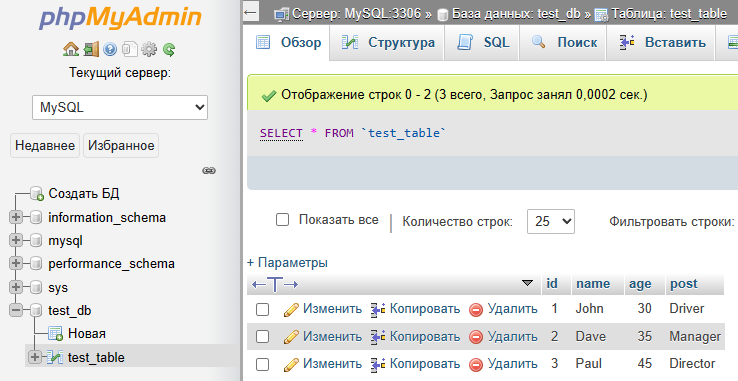
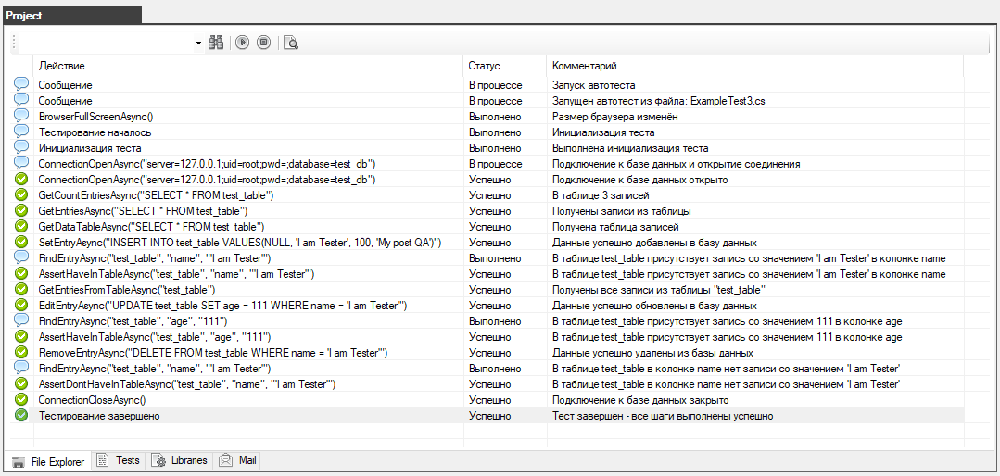

An example of an autotest
After the plugin has been installed and connected to the project, let's consider a simple autotest.
We have created a simple database in MySQL named test_db
There is one test_table table in this database with the fields: id, name, age, post

Now let's describe a simple autotest that will add, modify and delete data in the database while checking the correctness of the results.
|
Файл: ExampleTest3.cs
|
|
using System;
using System.Collections.Generic;
using System.ComponentModel;
using System.Windows.Forms;
using System.Threading;
using System.Threading.Tasks;
using System.IO;
using System.Data;
using System.Drawing;
using System.Linq;
using System.Text;
using System.Text.RegularExpressions;
using System.Net;
using System.Net.Http;
using System.Net.Http.Headers;
using System.Reflection;
using Newtonsoft.Json;
using HatFramework;
using HatPluginMySql;
namespace Hat
{
public class ExampleTest3
{
Tester tester;
public async void Main(Form browserWindow)
{
tester = new Tester(browserWindow);
await setUp();
await test();
await tearDown();
}
public async Task setUp()
{
tester.Description("Test #3 checking the database");
await tester.BrowserFullScreenAsync();
}
public async Task test()
{
DataTable dataTable = null;
List<List<string>> entries = new List<List<string>>();
TesterMySql testerMySql = new TesterMySql(tester);
await tester.TestBeginAsync();
await testerMySql.ConnectionOpenAsync("server=127.0.0.1;uid=root;pwd=;database=test_db");
int count = await testerMySql.GetCountEntriesAsync("SELECT * FROM test_table");
if (count > 0)
{
entries = await testerMySql.GetEntriesAsync("SELECT * FROM test_table");
dataTable = await testerMySql.GetDataTableAsync("SELECT * FROM test_table");
foreach (DataRow row in dataTable.Rows)
foreach (DataColumn col in dataTable.Columns)
tester.ConsoleMsg(row[col].ToString());
}
await testerMySql.SetEntryAsync("INSERT INTO test_table VALUES(NULL, 'I am Tester', 100, 'My post QA')");
bool result = await testerMySql.FindEntryAsync("test_table", "name", "'I am Tester'");
await testerMySql.AssertHaveInTableAsync("test_table", "name", "'I am Tester'");
entries = await testerMySql.GetEntriesFromTableAsync("test_table");
if (entries != null){
foreach(List<string> entry in entries)
foreach(string value in entry)
tester.ConsoleMsg(value);
}
await testerMySql.EditEntryAsync("UPDATE test_table SET age = 111 WHERE name = 'I am Tester'");
result = await testerMySql.FindEntryAsync("test_table", "age", "111");
await testerMySql.AssertHaveInTableAsync("test_table", "age", "111");
await testerMySql.RemoveEntryAsync("DELETE FROM test_table WHERE name = 'I am Tester'");
result = await testerMySql.FindEntryAsync("test_table", "name", "'I am Tester'");
await testerMySql.AssertDontHaveInTableAsync("test_table", "name", "'I am Tester'");
await testerMySql.ConnectionCloseAsync();
await tester.TestEndAsync();
}
public async Task tearDown()
{
// await tester.BrowserCloseAsync();
}
}
}
|
Please note that for the autotests to work correctly, you need to connect the library
using HatPluginMySql;
First, there is a connection to the database
TesterMySql testerMySql = new TesterMySql(tester);
await testerMySql.ConnectionOpenAsync("server=127.0.0.1;uid=root;pwd=;database=test_db");
Data manipulation is performed using different methods
await testerMySql.GetCountEntriesAsync("SELECT * FROM test_table");
await testerMySql.GetEntriesAsync("SELECT * FROM test_table");
await testerMySql.GetEntriesFromTableAsync("test_table");
await testerMySql.GetDataTableAsync("SELECT * FROM test_table");
await testerMySql.SetEntryAsync("INSERT INTO test_table VALUES(NULL, 'I am Tester', 100, 'My post QA')");
await testerMySql.FindEntryAsync("test_table", "name", "'I am Tester'");
await testerMySql.EditEntryAsync("UPDATE test_table SET age = 111 WHERE name = 'I am Tester'");
await testerMySql.RemoveEntryAsync("DELETE FROM test_table WHERE name = 'I am Tester'");
Special methods for checking the presence or absence of data in the database
await testerMySql.AssertHaveInTableAsync("test_table", "name", "'I am Tester'");
await testerMySql.AssertDontHaveInTableAsync("test_table", "name", "'I am Tester'")
At the end, the work with the database is completed by closing the connection to it
await testerMySql.ConnectionCloseAsync();
Let's run the autotest and look at the progress of the check and the result

All actions were completed, all checks were successful.
The test was completed successfully.
Created with the Personal Edition of HelpNDoc: Full-featured EBook editor